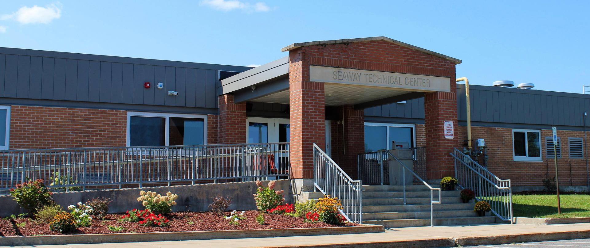

Seaway Technical Center |
|
|---|---|
|  |
Located just outside the Village of Norwood, the Seaway Career and Technical Education Center serves nine component school districts. The nearly 500 students who attend Seaway Tech, choose a course of study from one of 11 two-year CTE programs, the one-year New Visions: Medical Careers program, or the Alternative Education Program. Many students who complete a program at Seaway Tech earn industry-recognized certification such as EPA Certification (HVAC/R), ProStart and ServeSafe Certification (Culinary Arts), and New York State DOT Bridge Certification (Metalworking). |